Text & Konzeption · Headlines
Sennheiser
Für die Markteinführung der AMBEO Soundbar Max stand der Audio-Spezialist Sennheiser vor einer Herausforderung: Wie beweist man den immersiven Klang der besten Soundbar auf dem Markt? Unsere Antwort: mit den ehrlichsten Zuhörern überhaupt – Wildtieren. Für uns waren sie die beste Jury für Sound. In Südafrika filmten wir ihre Reaktionen auf den Klang der AMBEO Soundbar Max live vor Ort, in einer extra für das Experiment errichteten Mirror-Box, die sich harmonisch in die Natur integrierte.
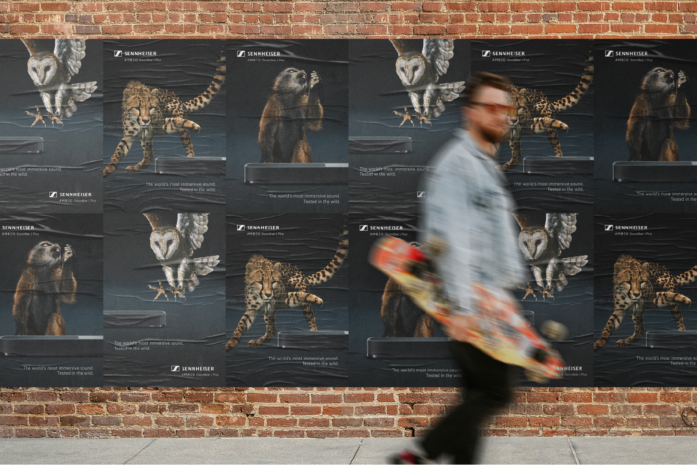
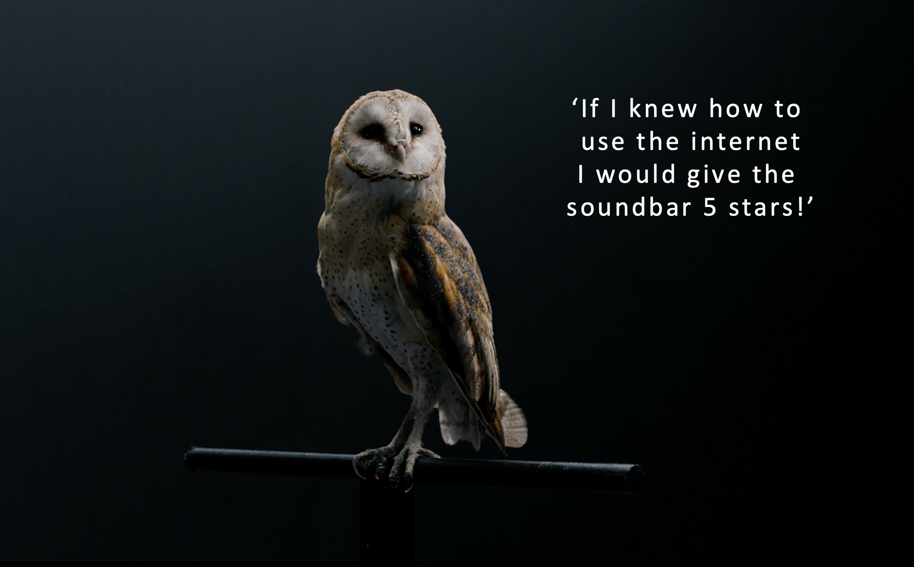
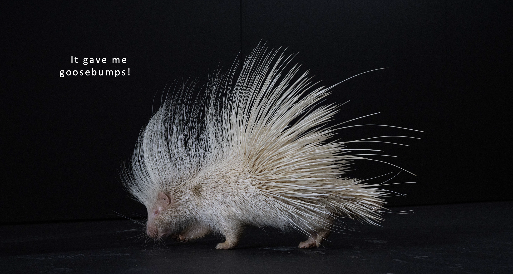
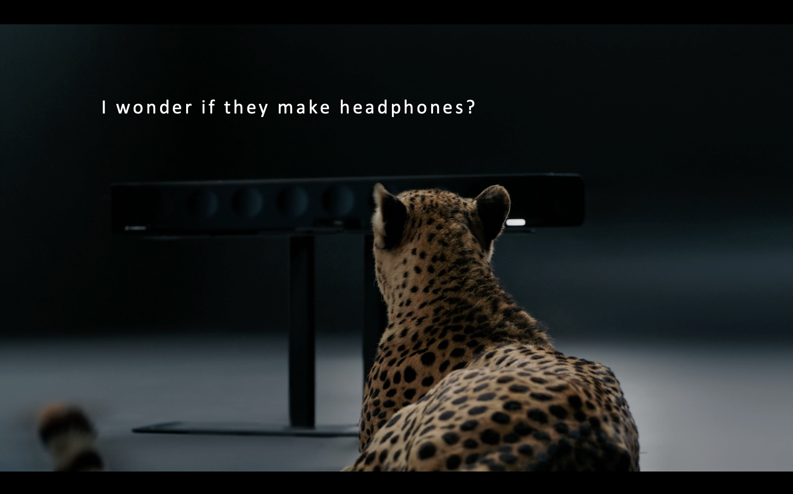
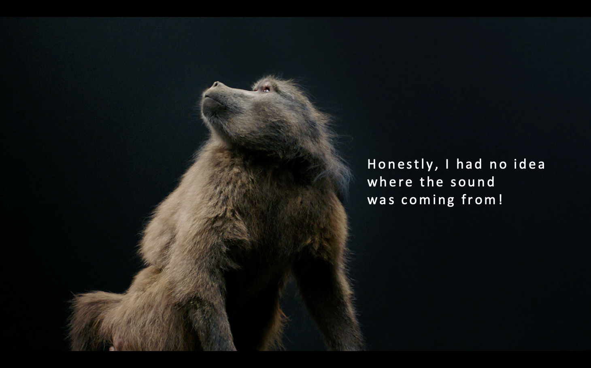
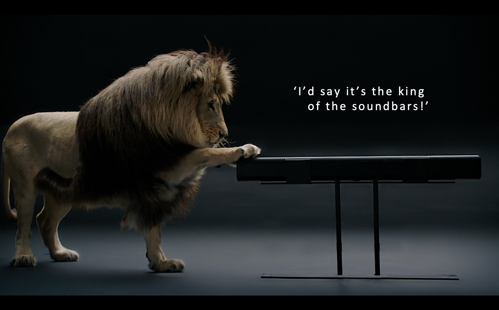
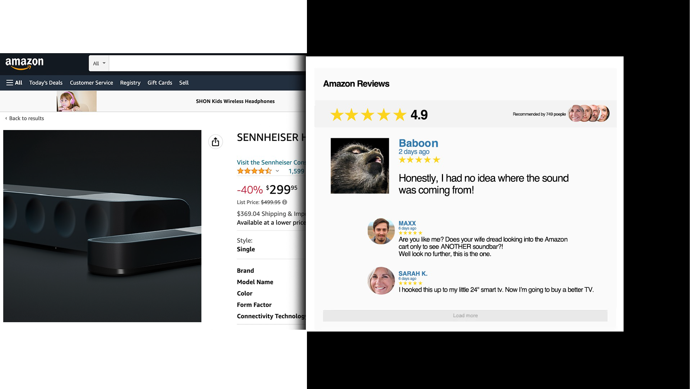
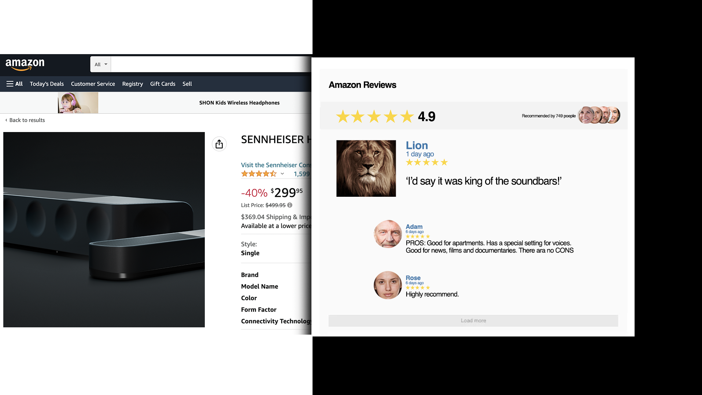
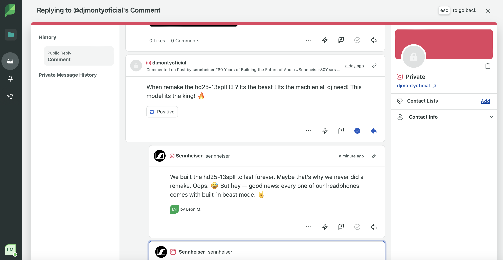
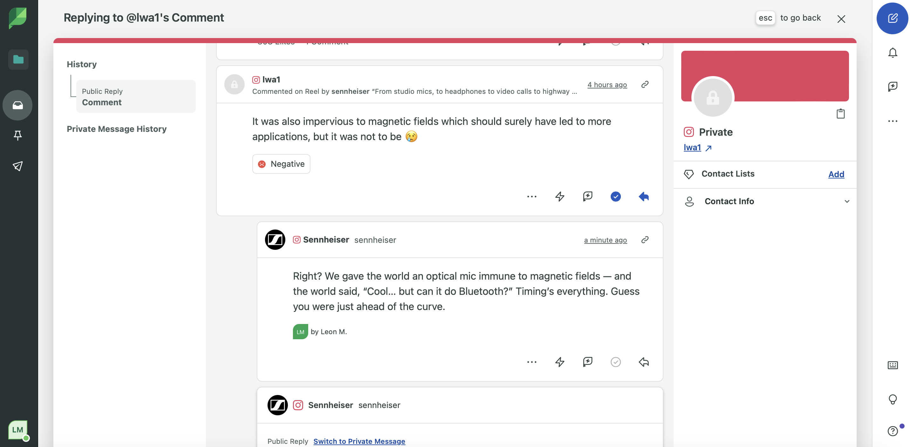
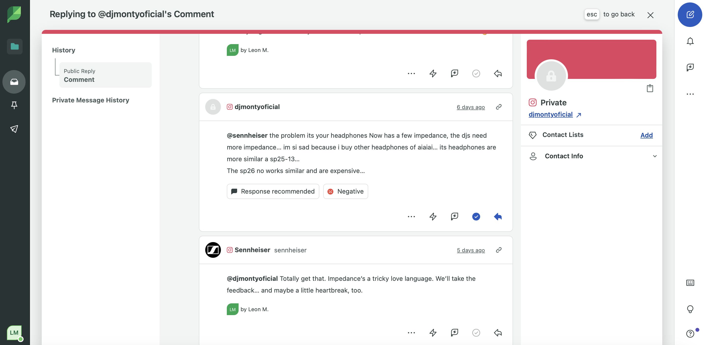
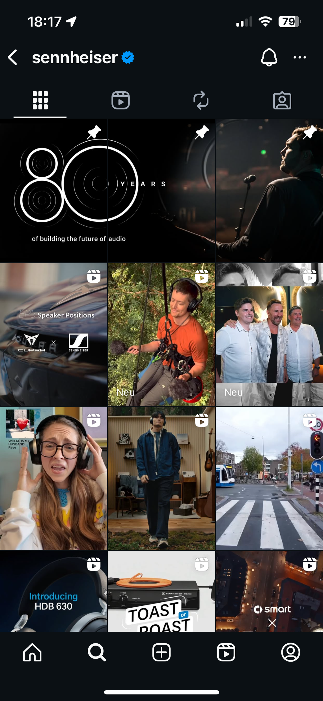
Für den Social-Media-Account von Sennheiser habe ich das Community Management mitverantwortet, d. h. ich habe im Namen von Sennheiser – entsprechend der Brand Voice – auf Kommentare von User:innen reagiert und selbst Kommentare verfasst, um für mehr Engagement unter den Posts zu sorgen.
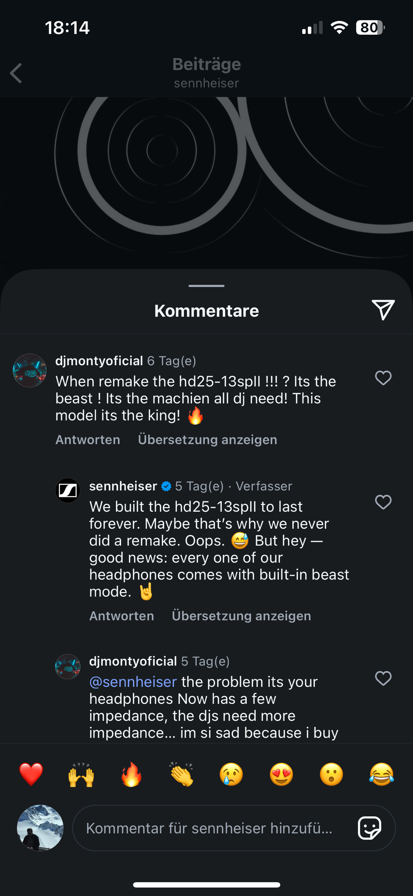
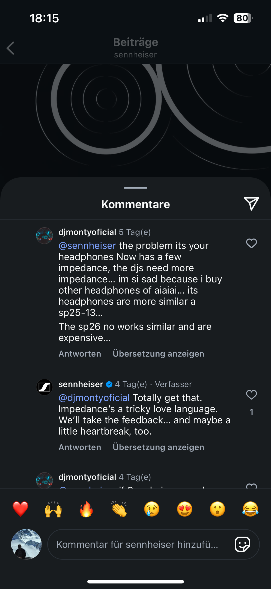
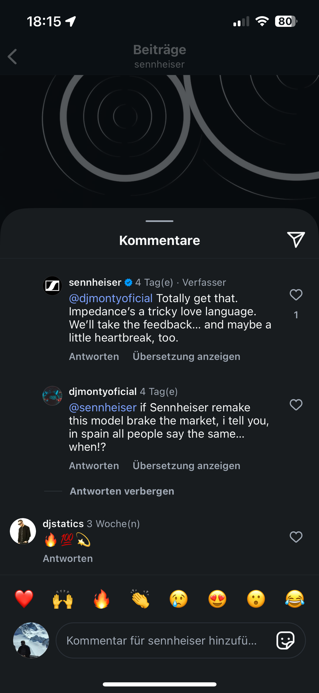
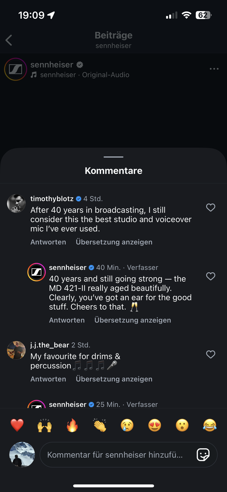
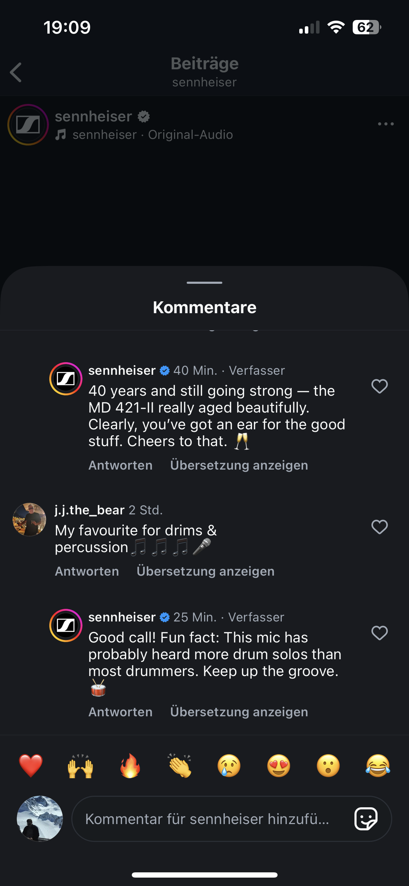
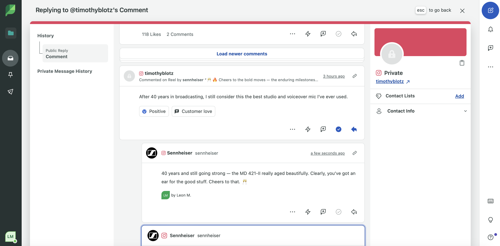
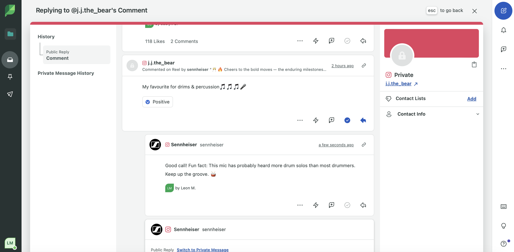